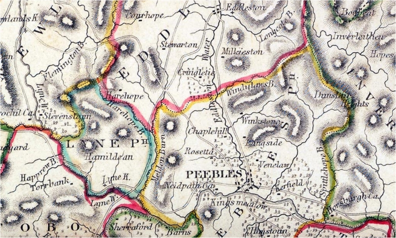

|
Veitch
Index
Veitch Family Lineages
Veitch of Courhope, Stewarton and Lyne
Eddleston Parish, Lyne Parish, Peeblesshire

Lands of Stewarton, Eddleston Parish, Lyne Parish,
Peebleshire
Map from the Second Statistical Account of Scotland c1845.
William Veitch of Kingside, Eddleston Parish
- He was named father of Alexander
Veitch of Hamilton in 1606, who in turn was identified as brother
to Andrew Veitch, portioner of Stewartoun in 1628, brother of
James Veitch of Stewartoun.
married __________
Children:
1(i). James Veitche of Courhope and Stewartoun.
Servant to the Earl of Morton. Imprisoned for slandering Alexander
and Jonas Hamilton at the request of his master. William Veitch
of Dawyck acted as Surety. He was "slaughtered" by
Alexander Hamilton et al about 1611.
1583 - Register of the Privy Council of Scotland Vol 3,
page 578 - Appeared this day, in presence of the Lordis of Secreit
the following persons Maister David Maxwell, servitour to Johnno,
Erll of Mortoun, And10 Portar, Williame Neilsoun, Thomas Cleuch,
James Thorbrand, Williame Broun, eldar, Williame Broun, youngar,
Johnne Forrestar, David Ritchertsoun, Clement Aitchesoun, George
Mark, Adame Allane, and James Merk, on the ane part ; and James
Vetche of Cowrhoip, Andro Vetche, his broder thair, Gawen Vetche
in Finglen, Robert Lintoun in Mekilhoip, Williame Broun in Hoprew,
on the uther pairt: being accusit and dilatit ather of thame
be uther of the treasonable raising of fire and birning of certane
houssis within the toun of Flemingtoun upoun the xxii day of
Junii last bipast, and of sindrie uther crymes specifeit and
contenit in the letters rasit at ather of the saidis pairteis
instance aganis utheris thairupoun." Both parties denying
their guilt, the Lords, s' willing to have the saidis personis
tryit and sic as beis fund giltie to be puneist," resolve
" that bayth the saidis pairteis salbe put to the knauledge
of ane assyis befoir the justice or his deputis in the tolbuith
of Edinburgh, upoun the xxiii day of Julii instant," and
therefore ordanis the justice-clerk or his deputis to direct
letters to summond ane assyis to the said day, and
1590 Dec 1 - Register of the Privy Council of Scotland
Vol 4, page 551 - Caution by Alexander, Lord Hume, and Hew, Lord
Somervile, for James Twedy of Drummelzeair in 5000 merks, for
Adam Tuedy of Dreva in £2000, for Williame Tuedy of the
Wra in 2000 merks, for Johnne Creichtoun of Quarter and Thomas
Porteous of Glenkirk in 1000 merks each, and for Andro Crechtoun
of Cordon in 500 merks, that Williame Veche of Dawik, Williame
Veche, his son, George Veche, brother to the said Williame Veche
of Dawik, James Veche in Curop, Adam Veche in Feythen, Alexander
Veche, his brother, Alexander Veche in Hammiltoun, Alexander
Veche in Peblis, Robert Veche, son of Walter Veche in Syntoun,
Johnne Veche in Clerkland, and Johnne Veche, son of the said
Walter Veche in Syntoun, shall be harmless of the said persons.
1605 James Twedy of Drummelyer for Sir Johne Murray of
Ettilstoun (Blakbarony) 3000 merks and Sir Archibald Murray of
Dernhall, 2000 merks not to harm Androw Veitche, portioner of
Stewartoun, or James Veitche, his brother there.
1607 - #1863. Apud Edinburgh, 25 Feb. REX confirmavit cartam
Jacobi Spens de Wolmerstoun, - [qua, - cum consensu Agnete Durie
sponse sue,-pro perimpletione contractus de data presentium,
vendidit colonello BARTHOLOMEO BALFOUR de Reidheuchis, et BEATRICI
CANT, conjugibus, - terras de Wolmerstoun et lie Maynis cum manerie,
in constabularia de Craill FOOTNOTE: RE: court in 1604 Names
of assize :-Math. Bailyie of Littilgill (chancellor), Alex. Kincaid
servant of the commendator of Halyrudhous, John Bannatyne in
Leith, Alex. Hay of Smeithfeild, Jas. Veache in Stewartoun, Rob.
Trotter of Richartstoun, Jas. Wynrahame portioner of Sauchtounhall,
George Hereis merchant burgess of Edinburgh, William Veiche in
Dawick, Alex. Somerwell younger of Humbie, Jas. Hadden portioner
of Sauchtoun, Jas. H. his son, Jas. Dowglas of Clappertoun, Robert
Wilkie portioner of Rathobyris, James Wylkie portioner there.
- Register of the Great Seal of Scotland 1306-1668
1610 - Register of the Privy Council of Scotland Vol 9,
page 38 -Complaint by Jonas Hammiltoun of Quotauott, Alexander
Hammiltoun, -his brother, Johnne Hendirsoun and Andro Thorbrand,
tenants of the Jonas, as follows:-Complainers have been accused
of theft by Johnne Ramsay of Quhythill, James Vetche of Courop,
and William Veitch of Kingsyd. Now, the said Hendirsoun and Thorbrand
having been apprehended by William, Lord Cranstoun, detained
prisoners a long time,and tried before the Justice for the said
crime, both had been acquitted bya famous assize; and, the said
Jonas Hammiltoun, and Alexander, hisbrother, having been also
challenged in presence of the Lords of Privy Council by Ramsay,
and put on trial, the said Ramsay, being unable tojustify his
malicious charge, had passed from the pursuit. From thesefacts
the Lords may clearly see how maliciously the complainers have
beenwronged in this matter.-Both parties appearing, and the defenders
havingbeen demanded on what ground they had accused the complainers,
and Ramsay having referred to the said James Veitche as his informer,
and Veitch having affirmed that George Craufurd of Gleneshaw
was his informer, the Lords ordain the said James Veitche to
be committed toward in the tolbooth of Edinburgh and detained
there till he produce hissaid informer. Then, in respect that
Ramsay has given up his informer,Hammiltoun renounces all quarrel
against Ramsay on account of the accusation, and these two embrace
each other in token of "perfytefreindschip " now knit
up between them.
1610 - Register of the Privy Council of Scotland Vol 9,
page 52 - Complaint by James Vetche in Stewartoun as follows:-On
____day of August instant he had been committed to ward in the
tolbooth of Edinburgh by the Lords of Privy Council for his alleged
declaration that Jonas Hammiltoun of Quotguot, and Alexander
Hammiltoun, his brother,had been the "outputteris"
of certain goods stolen from Ramsay of Quhythillis (ante, p.
38); and it is intended to detain him there till hefind warrant
for his said speeches. Now, complainer had no purpose toslander
the said two gentlemen, who are persons of "good worth andqualitie";
but, having been desired by William, Earl of Mortoun, hismaster,
"to speir oute the saidis goodis," he had received
the said information against the two gentlemen from George Crawfurd
in , and hadcommunicated it to Ramsay. Further, while complainer
is detainedin ward he cannot make any search for Crawfurd ; who
is an outlaw, and who, no doubt out of malice towards the said
persons, had defamed them as said is. He therefore prays to be
released, in order to the apprehensionof Crawfurd.-Both parties
appearing, the Lords ordain Vetche to be still detained in the
tolbooth till this day eight days; on which day if heproduce
his informer he shall be put to liberty; but, if he shall fail
to doso, he is to confess his offence in the presence of the
Council, admit that hehas slandered the said gentlemen, and humbly
on his knees crave theirpardon, finding caution to do the like
in the parish kirk on a Sundaybefore noon in time of preaching.
1610 - Register of the Privy Council of Scotland Vol 9,
page 58 - James Vetche in Stewartoun appears, and humbly on his
knees confesses that he had slandered Jonas Hammiltoun, and Alexander
Hammiltoun, his brother, as aforesaid (ante, pp. 52,53), and
therefore craves their pardon. The said Jonas, being present,
grants the same. Likewise compears William Vetche of Dawik, and
becomes cautioner for the said James in £1000 that on Sunday
next, during the forenoon preaching, he shall confess his said
offence in the kirk of Newbottle in presence of the parishioners
there convened and humbly on his knees crave pardon for the same.
1611 Alexander Hamyltoun, brother of Jones Hammyltoun of
Quotquott, and Edinburgh, Samuell Inglis, servant to the said
Jonas, remaining unrelaxed from afilihne horning of 10th instant,
at the instance of Marioun Wauchop, as relict, and James Weitche
in Stewartoun, as son, of the late James Veitche in Stewartoun,
for not having found caution to answer before the justice on
11th instant for the slaughter of the said James, commission
under the signet, subscribed by the Chancellor, Cassillis, Lynlythgow,
Lothiane, Blantyre, Balfour, and Alexander Hay, is given to all
the judges and ministers of the law, and to Johnne, Lord Fleming,
the Master of Wigtoun, Sir Archibald Murray of Darnehall, William
Creichtoun of Ryhill, William Dowglas, apparent of Cashogill,
and Sir J ohnne Murray of Phillophauch, to apprehend the said
rebels, and enter them before the Council for delivery to the
justice for trial
Married Marion Wauchop, named as relict in 1611
Children:
2(i). James Veitche of Stewartoun. Named as son of
James Veitche in 1611. He was identified as "furrier Burgess
of Edinburgh" in 1630 record and nephew (nepos ex fratre)
and heir of Andrew Vaitche of Stewarton.
1633 - 1260. Apud Edinburgh 9 April REX….et quas quarterias
de Stewartounes Jac. Vaiche pellio burgen. de Edinburgh, nepos
ex fratre et heres quondam Andree Waitehe de Stewartoun, et quas
terras de Ovir et Nather Stewartounes Tho. Bellendene frater
germanus quond. Willelmi B. filii quond. Thorne B, in Hairhope,
resignavernnt in…..- Register of the Great Seal of Scotland
1306-1668
1(ii). Andrew Vaitche, of Courhope and
portioner of Stewartoun. Identified as brother to
James Veitche of Stewartoun who was murdered in 1611. He died
about 1627 (Portioner is 'one who possesses part of a land)
1583 - Register of the Privy Council of Scotland Vol 3,
page 578 - Appeared this day, in presence of the Lordis of Secreit
the following persons Maister David Maxwell, servitour to Johnno,
Erll of Mortoun, And10 Portar, Williame Neilsoun, Thomas Cleuch,
James Thorbrand, Williame Broun, eldar, Williame Broun, youngar,
Johnne Forrestar, David Ritchertsoun, Clement Aitchesoun, George
Mark, Adame Allane, and James Merk, on the ane part ; and James
Vetche of Cowrhoip, Andro Vetche, his broder thair, Gawen Vetche
in Finglen, Robert Lintoun in Mekilhoip, Williame Broun in Hoprew,
on the uther pairt: being accusit and dilatit ather of thame
be uther of the treasonable raising of fire and birning of certane
houssis within the toun of Flemingtoun upoun the xxii day of
Junii last bipast, and of sindrie uther crymes specifeit and
contenit in the letters rasit at ather of the saidis pairteis
instance aganis utheris thairupoun." Both parties denying
their guilt, the Lords, s' willing to have the saidis personis
tryit and sic as beis fund giltie to be puneist," resolve
" that bayth the saidis pairteis salbe put to the knauledge
of ane assyis befoir the justice or his deputis in the tolbuith
of Edinburgh, upoun the xxiii day of Julii instant," and
therefore ordanis the justice-clerk or his deputis to direct
letters to summond ane assyis to the said day, and
1596-97 #505. Apud Halyrudhous, 13 Jan. REX concessit ANDREE
WAITCHE in Cowrope, et MARGARE(TE) HAY ejus sponse, -1} quartas
partes terrarum de Stewartounes, in parochia de Edlistoun, vic.
Peiblis;-que fuerunt quondam D. Thome Hay vicarii pensionarii
de Edlistoun, bastardi, de rege tente per servitium warde; et
ob ejus decessum regi devenerunt:-TENEND. dictis And, et Marg.
in conjuncta infeodatione, et heredibus masc. inter eos legit.
procreatis, quibus deficientibus, legit. et propinquioribus heredibus
(masc.) dicti And, quibuscunque, cognomen et arma de Waitche
gerentibus, et assignatis:-REDDEND. unam sectam ad curiam capitalem
vic. de Peiblis post festum S. Michaelis, necnon vardam &c.:-TEST.
ut in aliis cartis &c. xli. 110. - Register of the Great
Seal of Scotland 1306-1668
29th May 1618. 1204. Precept of Clare Constat by Mr. Alexander
Greig, minister of the Word of God at Drummalzear and perpetual
vicar of the parish Kirk of Stobo, for infefting William Veache,
now of Kingsyd, as lawful and nearest heir of the late William
Veache of Kingsyd, his grandfather, in the 40s. lands of Wester
Hopprew, lying in the barony of Hopprew and shire of Peables.
(Written by James Toischeache, servitor to Arthur Ray, writer
in Edinburgh.) Dated at Stobo 29th May 1618. Witnesses, Alexander
Vaitche, brother german to William Vaitche of Dawick, Andrew
Vaitche, portioner of Stewartoun, and James Russell in Stobo.
Signed. - Calendar of Writs Preserved at Yester House
1620 Complaint by Andrew Vaitche, portioner of Stewartoun,
and Margaret Hay, his spouse, that Sir William McClellane of
Auchlane, knight' and John McAdame merchant, and Patrick Nemo,
tailor, burgesses of Edinburgh, remain unrelaxed from a horning
of date 7th, 11th and 15th January 1613, for not paying to the
complainers the sum of 1200 merks of principal, with the bygone
annualrent of 120 merks.-The pursuers appearing by David Ramsay,
one of the company of the Guard, and the defenders not appearing,
the Lords give orders to the Captain of the Guard as above.
1628 July 25 #1426 - Jacobus Waitche filius legitiumus
Alexandri Waitche de Hamiltoun, heres Andrae Waitche portionarii
de Stewartoun, patrui. X.271. - Inquisitions Generales
Married Margaret Hay
1620 Complaint by Andrew Vaitche, portioner of Stewartoun,
and Margaret Hay, his spouse, that Sir William McClellane of
Auchlane, knight' and John McAdame merchant, and Patrick Nemo,
tailor, burgesses of Edinburgh, remain unrelaxed from a horning
of date 7th, 11th and 15th January 1613, for not paying to the
complainers the sum of 1200 merks of principal, with the bygone
annualrent of 120 merks.-The pursuers appearing by David Ramsay,
one of the company of the Guard, and the defenders not appearing,
the Lords give orders to the Captain of the Guard as above.
Children:
2(i). William Vaitche of Lyne. He was named heir of
his father, Andrew Vaitche of Stewartoun in 1627
1617, July 31. William Veitch of Lyne complains that, '
upon occasion of ane accident whilk fell out within the toun
of Kirkurd laitlie, quhair Malcolme Cokburne and Robert Hamiltoun
were hurte, the said complenair was tane be the Laird of Skirling,
who is ane privat person, becaus he happenit to be resent, and
he hes brocht him to Edinburgh, and committit him to waird within
the hue hous of the tolbuith, and nane of his friendis sufferit
to have access unto him.' Veitch states, in addition, that he
had nothing to do with the hurting of the said persons, and only
acted as a ' reddair, and did quhat in him lay to have sinderit
thame.' The Lords set him at liberty, on finding caution for
his appearance when required. P. C. R.
1627 Mar 1 [1325 Inq. Generales] Willielmus Vaitche in
Lyne - heres Andres Vaitche portionarii de Stewartoun, patris
ix.174 - . Inquisitionum Ad Capellam Domini Regis Retornatarum
Married ________
Children:
3(i). Jonet Veitch. She is named daughter of William
Veitch of Lyne in 1631 sasine. She was buried 9 October 1645
at Peebles Parish
1645 Oct 9 Peebles Parish Register - Jennet Waitche, spous
to Wm Watche notar was buried
Married William Veitch, notary and burgess of Peebles.
Roxburgh, Selkirk, Peeblesshire Sasines Vol 3 page 439
dated 4th July registered 20 July 1631 of Jonet Vaitche spouse
of William Vaitch (ut infra). Compeared Wm Vaitche notar and
burgess of Peebles at th[ ] his 5 roods of land lying in the
Kirkland of Peebles between the lands of the deceased Alexr Horsburgh
on the West, land sof Gavin Plenderleith on the East, lands of
Thoas Hoi[ ] on the North and lands of Jas Robinson called Longait
on South; also as there his 3 roods of said Kirklands called
Aikerbush between the lands of the dec'd Walter Scott of Mount[
]ger on East, Eliz. Chisholm on South, JohnFrank on West and
Wm Hay on North extending in all to 7 roods (sic) lying in the
parish of Peebles, and there for the love he bears towards his
spouse Jonet Vaitche gives her liferent sasine thereof. Wit:
(inter alia) Willielmo Vaitche in Lyne patre dictae Jonetae.
Patrium Vaitche N[otary] P[ublic]
2(ii). John Veitch. Born about 1586-1593 (age 14-21)
when apprenticed to William Wallace, tailor in 1607. Apparently
deceased by 1640.
1607 June 17 Apprentice: John Veitch son to Andrew Veitch
portioner of Stewartoun with William Wallace, tailor
married _______
Children:
3(i). Andrew Veitch. Named as son of John Veitch of
Stewartoun in 1640 apprenticeship. Presumably, son of John Veitch
above.
1640 Aug 12 Andrew Veitch son to late John Veitch portioner
of Stewartoun, with John Young wright - The Register of Apprentices
of the City of Edinburgh, 1583-1666
1(iii). Alexander Veitch of Hamiltoun,
Lyne Parish - named father of the nephew of Andrew
Veitch, portioner of Stewartoun, thus his brother, in 1629. He
was apparently deceased by 1609 apprenticeship of his son James
Veitch, certainly deceased by 1614.
1590 Dec 1 - Register of the Privy Council of Scotland
Vol 4, page 551 - Caution by Alexander, Lord Hume, and Hew, Lord
Somervile, for James Twedy of Drummelzeair in 5000 merks, for
Adam Tuedy of Dreva in £2000, for Williame Tuedy of the
Wra in 2000 merks, for Johnne Creichtoun of Quarter and Thomas
Porteous of Glenkirk in 1000 merks each, and for Andro Crechtoun
of Cordon in 500 merks, that Williame Veche of Dawik, Williame
Veche, his son, George Veche, brother to the said Williame Veche
of Dawik, James Veche in Curop, Adam Veche in Feythen, Alex ander
Veche, his brother, Alexander Veche in Hammiltoun, Alexander
Veche in Peblis, Robert Veche, son of Walter Veche in Syntoun,
Johnne Veche in Clerkland, and Johnne Veche, son of the said
Walter Veche in Syntoun, shall be harmless of the said persons.
16th June 1595. 937. Reversion by Alex. Vaitche in Hammyltoun,
son lawful to um. Wm. V. of Kingsyde, for the sum of 1300 (merks),
following on a contract dated 5 June 1595 and a charter by James
Lord Hay of Zester, with consent of Mark Lord of Newbottill,
his father-in-law, sole surviving interdicter of the said Lord's
lands of Hammyltoun, the lands of Haggen, a brewland in the town
and territory of Lyne, and his 40 shilling land of Glenrusco,
Peeblesshire; Bothanis, 16 June 1595; witnesses, John Kar, rainister
of Goddis worde at the kirk of Lyne, Wm. Twedie, John Home, servitors
to the said las. Lord Hay, and Jas. Gray, N.P. {H.)
9th June 1606. 1035. Precept of Clare Constat by James
Lord Hay of Yester directed to Robert Broun in Edstoun, bailie,
for infefting Johne Vaiche, now in Hammiltoun, as lawful son
and nearest heir to the late Alexander Vaiche in Hammiltoun,
his father, in the lands of Hammiltoun, Haggan with an oxgate
of land called the Brewland, lying in the town and territory
of Lyne, and 40s. land of Glenrusco lying in the shire of Peebles.
To be held of the granter for payment of one penny yearly if
asked. (Written by John Tuedie, clerk of the burgh of Peebles.).
At Bothanis 9 June 1606. Witnesses, Mr. George Butlar, John Ker
and William Geddes, servitors to the granter. (Sig. cut out.)
Note. July 1606. Sasine given by the bailie before Thomas Paterson,
James Huntare in Hairstoun, James Hunter in Polmude. {,M.)
married __________
Children:
2(i). James Veitch - named son of Alexander Veitch
of Hamiltoun and heir of his uncle Andrew Veitch, portioner of
Stewartoun in 1629
1609 May 3 James Veitch son to late Alexander Veitch in
Hamilton with Thomas Todrig, skinner
1628 July 25 #1426 - Jacobus Waitche filius legitiumus
Alexandri Waitche de Hamiltoun, heres AndraeWaitche portionarii
de Stewartoun, patrui.[means 'uncle'] X.271. - Inquisitions Generales
1629 Oct 8 [85 Inq. Peebles] Jacobus Vaitche - heres Andrews
Vaitche portionarii de Stewartoun, patrai - in quarta parte et
quinta parte alterius quartae partis terrarum de Stewartoun xiii.
129 - Inquisitionum Ad Capellam Domini Regis Retornatarum
2(ii). John Veitch of Hamiltoun - named son of Alexander
Veitch of Hamiltoun in 1606 and 1614
9th June 1606. 1035. Precept of Clare Constat by James
Lord Hay of Yester directed to Robert Broun in Edstoun, bailie,
for infefting Johne Vaiche, now in Hammiltoun, as lawful son
and nearest heir to the late Alexander Vaiche in Hammiltoun,
his father, in the lands of Hammiltoun, Haggan with an oxgate
of land called the Brewland, lying in the town and territory
of Lyne, and 40s. land of Glenrusco lying in the shire of Peebles.
To be held of the granter for payment of one penny yearly if
asked. (Written by John Tuedie, clerk of the burgh of Peebles.).
At Bothanis 9 June 1606. Witnesses, Mr. George Butlar, John Ker
and William Geddes, servitors to the granter. (Sig. cut out.)
Note. July 1606. Sasine given by the bailie before Thomas Paterson,
James Huntare in Hairstoun, James Hunter in Polmude. {,M.)
1614 - Register of the Privy Council of Scotland Vol 10,
page 292 - Chargeis aganis Johnne and Andro Vetcheis, sonis to
umquhile Alexander Vetche in Hamiltoun, to compeir this day aucht
dayis."
2(iii). Andrew Veitch - named son of Alexander Veitch
of Hamiltoun in 1614
1614 - Register of the Privy Council of Scotland Vol 10,
page 292 - Chargeis aganis Johnne and Andro Vetcheis, sonis to
umquhile Alexander Vetche in Hamiltoun, to compeir this day aucht
dayis."
Alexander Veitch of Lyne Parish
merchant and burgess of Peebles. Named as the father of son William
Veitch of Eliock (HistSocSigWriters)
Married ______
Children:
1(i). William Veitch of Eliock. born 2 January 1671.
He was apprenticed to John Frank, Named as son of Alexander Veitch
of Lynn (HistSocSigWriters). Writer to the signet of Edinburgh.
He died 25 October 1747
"WILLIAM VEITCH, Writer to the Signet, a cadet of
the family of Veitch of Dawick, in Peebleshire, purchased the
Estate of Eliock in 1723, from the attainted Earl of Carnwath.
In 1728, he further bought from the Commissioners of Forfeited
Estates the following lands formerly belonging to Lord Carnwath,
viz. :-The L10 land of Dalruscan, L10 land of Trailflat, and
L5 land of Amisfield, in the parish of Tinwald. He also acquired
lands in the Barony of Kirkmichael. These lands were first disponed
to Alexander, son of the late Earl of Carnwath, but there was
a contract for repurchase, dated 11th September, 1724. In July,
1724, William Veitch, for L16,000 10s 2d, Scots, the price put
upon them by the Lords Commissioners, bought the lands of Frenchland;
and in 1728 there is a dis charge of a bond on the Nithsdale
Estate by Hugh Maxwell of Dalswinton to William Veitch of Eliock,
of the house and lands of Frenchland, which was registered at
Dumfries, November 29, 1739. He had a daughter Mary, married
to Robert Irving, W.S., the marriage contract being dated June
7, 1764. William Veitch of Eliock, died 25th October, 1747. At
his death his affairs were in a somewhat embarrassed condition,
the primary cause being his advancing a great deal of money on
landed property, Frenchland amongst others. The Veitches of Frenchland
were his near relatives, and by Lord Eliock, who entailed the
Eliock Estates, were named as next heirs after Henry Veitch's
family. Lord Eliock's father had a sister Marion, married in
1683 to Patrick Govan, and their daughter Christian Govan, born
1684, married William Veitch of Frenchland. John Veitch, merchant
in Edinburgh, was served heir to his father, William Veitch of
Frenchland, Writer in Edinburgh, 5th December 1758." - Folk
lore and genealogies of uppermost Nithsdale, By William Wilson
of Sanquhar
Married Christian Thomason, daughter of Gavin Thomason,
Provost of Peebles
Children:
2(i). James Veitch, Lord Eliock.
born 25 September 1712. Son of William Veitch of Boigend and
Eliock. Served apprenticeship with his father William Veitch,
writer of the signet. He died at Edinburgh on 1 July 1793. He
was unmarried, and was succeeded by his nephew
VEITCH, JAMES, Lord Eliock (1712–1793), Scottish judge,
son of William Veitch of Boigend and Eliock, writer to the signet,
Edinburgh, was born on 25 Sept. 1712. After serving an apprenticeship
with his father, he was called to the Scottish bar on 15 Feb.
1738. Shortly afterwards he visited the continent, where he became
a favourite of Frederick the Great at his court. On returning
to Scotland, he kept up a correspondence with his majesty. On
13 July 1747 he was appointed sheriff-depute of the county of
Peebles, in 1755 was elected representative in parliament for
Dumfriesshire, and continued member for the county till 1760.
In 1761 he was elevated to the bench in the room of Andrew Macdowall
(lord Bankton) [q. v.], and took his seat on 6 March by the title
of Lord Eliock. He died at Edinburgh on 1 July 1793. He was unmarried,
and was succeeded by his nephew. ‘His lordship,’ say
Brunton and Haig, ‘was endowed with mental abilities of
the first order, and was generally allowed to be one of the most
accomplished scholars of his time.’ Dictionary of National
Biography [Books of Sederunt; Brunton and Haig's Senators of
the College of Justice, pp. 525–6; Gent. Mag. 1793, ii.
675; Scots Mag. 1793, p. 361; Foster's Members of Parliament
of Scotland, p. 347.]; A history of the Society of Writers to
Her Majesty's Signet
Unmarried
1(ii). Marion Veitch. She married Patrick Govan in
1683. Their daughter Christian Govan born 1684, married William
Veitch of Frenchland. Their son John Veitch, merchant in Edinburgh
was served heir to his father William Veitch of Frenchland, Writer
in Edinburgh
James Veitch was heir of Lord Eliock. He was a 1st couisin's
son. But died soon after
Henry Veitch was next heir. He was a 2nd cousin's son.
Son of John Veitch who was in turn son of Rev Henry Veitch, minister
at Swinton Berwickshire.
1583 - Register of the Privy Council of Scotland Vol 3, page
578 - Appeared this day, in presence of the Lordis of Secreit
the following persons Maister David Maxwell, servitour to Johnno,
Erll of Mortoun, And10 Portar, Williame Neilsoun, Thomas Cleuch,
James Thorbrand, Williame Broun, eldar, Williame Broun, youngar,
Johnne Forrestar, David Ritchertsoun, Clement Aitchesoun, George
Mark, Adame Allane, and James Merk, on the ane part ; and James
Vetche of Cowrhoip, Andro Vetche, his broder thair, Gawen Vetche
in Finglen, Robert Lintoun in Mekilhoip, Williame Broun in Hoprew,
on the uther pairt: being accusit and dilatit ather of thame
be uther of the treasonable raising of fire and birning of certane
houssis within the toun of Flemingtoun upoun the xxii day of
Junii last bipast, and of sindrie uther crymes specifeit and
contenit in the letters rasit at ather of the saidis pairteis
instance aganis utheris thairupoun." Both parties denying
their guilt, the Lords, s' willing to have the saidis personis
tryit and sic as beis fund giltie to be puneist," resolve
" that bayth the saidis pairteis salbe put to the knauledge
of ane assyis befoir the justice or his deputis in the tolbuith
of Edinburgh, upoun the xxiii day of Julii instant," and
therefore ordanis the justice-clerk or his deputis to direct
letters to summond ane assyis to the said day, and
1590s
1590 Dec 1 - Register of the Privy Council of Scotland Vol
4, page 551 - Caution by Alexander, Lord Hume, and Hew, Lord
Somervile, for James Twedy of Drummelzeair in 5000 merks, for
Adam Tuedy of Dreva in £2000, for Williame Tuedy of the
Wra in 2000 merks, for Johnne Creichtoun of Quarter and Thomas
Porteous of Glenkirk in 1000 merks each, and for Andro Crechtoun
of Cordon in 500 merks, that Williame Veche of Dawik, Williame
Veche, his son, George Veche, brother to the said Williame Veche
of Dawik, James Veche in Curop, Adam Veche in Feythen, Alex ander
Veche, his brother, Alexander Veche in Hammiltoun, Alexander
Veche in Peblis, Robert Veche, son of Walter Veche in Syntoun,
Johnne Veche in Clerkland, and Johnne Veche, son of the said
Walter Veche in Syntoun, shall be harmless of the said persons.
1596-97 #505. Apud Halyrudhous, 13 Jan. REX concessit ANDREE
WAITCHE in Cowrope, et MARGARE(TE) HAY ejus sponse, -1} quartas
partes terrarum de Stewartounes, in parochia de Edlistoun, vic.
Peiblis;-que fuerunt quondam D. Thome Hay vicarii pensionarii
de Edlistoun, bastardi, de rege tente per servitium warde; et
ob ejus decessum regi devenerunt:-TENEND. dictis And, et Marg.
in conjuncta infeodatione, et heredibus masc. inter eos legit.
procreatis, quibus deficientibus, legit. et propinquioribus heredibus
(masc.) dicti And, quibuscunque, cognomen et arma de Waitche
gerentibus, et assignatis:-REDDEND. unam sectam ad curiam capitalem
vic. de Peiblis post festum S. Michaelis, necnon vardam &c.:-TEST.
ut in aliis cartis &c. xli. 110. - Register of the Great
Seal of Scotland 1306-1668
1600s
1607 - #1863. Apud Edinburgh, 25 Feb. REX confirmavit cartam
Jacobi Spens de Wolmerstoun, - [qua, - cum consensu Agnete Durie
sponse sue,-pro perimpletione contractus de data presentium,
vendidit colonello BARTHOLOMEO BALFOUR de Reidheuchis, et BEATRICI
CANT, conjugibus, - terras de Wolmerstoun et lie Maynis cum manerie,
in constabularia de Craill FOOTNOTE: RE: court in 1604 Names
of assize :-Math. Bailyie of Littilgill (chancellor), Alex. Kincaid
servant of the commendator of Halyrudhous, John Bannatyne in
Leith, Alex. Hay of Smeithfeild, Jas. Veache in Stewartoun, Rob.
Trotter of Richartstoun, Jas. Wynrahame portioner of Sauchtounhall,
George Hereis merchant burgess of Edinburgh, William Veiche in
Dawick, Alex. Somerwell younger of Humbie, Jas. Hadden portioner
of Sauchtoun, Jas. H. his son, Jas. Dowglas of Clappertoun, Robert
Wilkie portioner of Rathobyris, James Wylkie portioner there.
- Register of the Great Seal of Scotland 1306-1668
1607 June 17 John Veitch son to Andrew Veitch portioner of
Stewartoun with William Wallace, tailor - The Register of Apprentices
of the City of Edinburgh, 1583-1666
1610s
1610 - Register of the Privy Council of Scotland Vol 9, page
38 -Complaint by Jonas Hammiltoun of Quotauott, Alexander Hammiltoun,
-his brother, Johnne Hendirsoun and Andro Thorbrand, tenants
of the Jonas, as follows:-Complainers have been accused of theft
by Johnne Ramsay of Quhythill, James Vetche of Courop, and William
Veitch of Kingsyd. Now, the said Hendirsoun and Thorbrand having
been apprehended by William, Lord Cranstoun, detained prisoners
a long time,and tried before the Justice for the said crime,
both had been acquitted bya famous assize; and, the said Jonas
Hammiltoun, and Alexander, hisbrother, having been also challenged
in presence of the Lords of Privy Council by Ramsay, and put
on trial, the said Ramsay, being unable tojustify his malicious
charge, had passed from the pursuit. From thesefacts the Lords
may clearly see how maliciously the complainers have beenwronged
in this matter.-Both parties appearing, and the defenders havingbeen
demanded on what ground they had accused the complainers, and
Ramsay having referred to the said James Veitche as his informer,
and Veitch having affirmed that George Craufurd of Gleneshaw
was his informer, the Lords ordain the said James Veitche to
be committed toward in the tolbooth of Edinburgh and detained
there till he produce hissaid informer. Then, in respect that
Ramsay has given up his informer,Hammiltoun renounces all quarrel
against Ramsay on account of the accusation, and these two embrace
each other in token of "perfytefreindschip " now knit
up between them.
1610 - Register of the Privy Council of Scotland Vol 9, page
52 - Complaint by James Vetche in Stewartoun as follows:-On ____day
of August instant he had been committed to ward in the tolbooth
of Edinburgh by the Lords of Privy Council for his alleged declaration
that Jonas Hammiltoun of Quotguot, and Alexander Hammiltoun,
his brother,had been the "outputteris" of certain goods
stolen from Ramsay of Quhythillis (ante, p. 38); and it is intended
to detain him there till hefind warrant for his said speeches.
Now, complainer had no purpose toslander the said two gentlemen,
who are persons of "good worth andqualitie"; but, having
been desired by William, Earl of Mortoun, hismaster, "to
speir oute the saidis goodis," he had received the said
information against the two gentlemen from George Crawfurd in
, and hadcommunicated it to Ramsay. Further, while complainer
is detainedin ward he cannot make any search for Crawfurd ; who
is an outlaw, and who, no doubt out of malice towards the said
persons, had defamed them as said is. He therefore prays to be
released, in order to the apprehensionof Crawfurd.-Both parties
appearing, the Lords ordain Vetche to be still detained in the
tolbooth till this day eight days; on which day if heproduce
his informer he shall be put to liberty; but, if he shall fail
to doso, he is to confess his offence in the presence of the
Council, admit that hehas slandered the said gentlemen, and humbly
on his knees crave theirpardon, finding caution to do the like
in the parish kirk on a Sundaybefore noon in time of preaching.
1610 - Register of the Privy Council of Scotland Vol 9, page
58 - James Vetche in Stewartoun appears, and humbly on his knees
confesses that he had slandered Jonas Hammiltoun, and Alexander
Hammiltoun, his brother, as aforesaid (ante, pp. 52,53), and
therefore craves their pardon. The said Jonas, being present,
grants the same. Likewise compears William Vetche of Dawik, and
becomes cautioner for the said James in £1000 that on Sunday
next, during the forenoon preaching, he shall confess his said
offence in the kirk of Newbottle in presence of the parishioners
there convened and humbly on his knees crave pardon for the same.
1614 - Register of the Privy Council of Scotland Vol 10, page
292 - Feud the Veitches Of Dawick and the Hamiltons Of Quotquot
- Submissioun betuix William Vetche of Dawik, and Robert Vetche
in Steuartoun Vetche of Kingsyde, and Marioun Wauchop, relict
, of umquhile James Vetche in Steuartoun, for thame selfhs, and
takand the burding on thame for the bairnis of the said umquhile
James and remanent thair kin and freindis, on the ane part, and
Jonas Hammiltoun of Coitquott, for himself, and takand the burding
on him for his brether, kin, and freindis, on the uther pairt.
Thay haif promeist to nominat thair frei.ndis this day fyftene
dayis."
1614 - Register of the Privy Council of Scotland Vol 10, page
292 - Chargeis aganis Johnne and Andro Vetcheis, sonis to umquhile
Alexander Vetche in Hamiltoun, to compeir this day aucht dayis."
1614 - Register of the Privy Council of Scotland Vol 10, page
293 - "The quhilk day Andro Vetche compeirit befoir the
Counsaill, and declairit that he wes content to be comprehendit
under the submissioun past betuix the Laird of Dawik and Jonas
Hamiltoun of Coitquott for the slaughter of umquhile James Vetche."
1614 - Register of the Privy Council of Scotland Vol 10, page
294 -The quhilk day Williame Vetche of Dawik, Andro Vetche, bruther
to umquhill James Vetche of Steuartoun, and Williame Vetche of
Kingsyde, compeirand personalie befoir the Counsaill, thay nominat
Sir Gedeone Murray of Elibank, knight, Thesaurair Depute, and
Sir Johnne Cokburne of Ormiestoun, Justice Clerk, as freindis
and arbitouris for thame in the submissioun past betuix thame
and Jonas Hamiltoun of Coitquott. And siclike compeirit personalie
the said Jonas, and nominat Thomas, Lord of Binning, and Sir
Alexander Drummond of Medop, as arbitouris for him in that same
submissioun. And the saidis arbitouris acceptit the submissioun
upoun thame, and appointit Fryday nixt to meete in the Counsalhous
of this burgh for ressaveing and heiring of the pairtyis clames
; quhilkis clames the partyeis promeist to haif in reddines,
and to gif the same in that day."
29th May 1618. 1204. Precept of Clare Constat by Mr. Alexander
Greig, minister of the Word of God at Drummalzear and perpetual
vicar of the parish Kirk of Stobo, for infefting William Veache,
now of Kingsyd, as lawful and nearest heir of the late William
Veache of Kingsyd, his grandfather, in the 40s. lands of Wester
Hopprew, lying in the barony of Hopprew and shire of Peables.
(Written by James Toischeache, servitor to Arthur Ray, writer
in Edinburgh.) Dated at Stobo 29th May 1618. Witnesses, Alexander
Vaitche, brother german to William Vaitche of Dawick, Andrew
Vaitche, portioner of Stewartoun, and James Russell in Stobo.
Signed. - Calendar of Writs Preserved at Yester House
1620s
1627 Mar 1 [1325 Inq. Generales] Willielmus Vaitche in Lyne
- heres Andres Vaitche portionarii de Stewartoun, patris ix.174
- Inquisitions Generales
1628 July 25 #1426 - Jacobus Waitche filius legitiumus Alexandri
Waitche de Hamiltoun, heres AndraeWaitche portionarii de Stewartoun,
patrui. X.271. - Inquisitions Generales
1629 Oct 8 [85 Inq. Peebles] Jacobus Vaitche - heres Andrews
Vaitche portionarii de Stewartoun, patrai - in quarta parte et
quinta parte alterius quartae partis terrarum de Stewartoun xiii.
129 - Inquisitionum Ad Capellam Domini Regis Retornatarum
1630s
1633 - 1260. Apud Edinburgh 9 April REX….et quas quarterias
de Stewartounes Jac. Vaiche pellio burgen. de Edinburgh, nepos
ex fratre et heres quondam Andree Waitehe de Stewartoun, et quas
terras de Ovir et Nather Stewartounes Tho. Bellendene frater
germanus quond. Willelmi B. filii quond. Thorne B, in Hairhope,
resignavernnt in…..- Register of the Great Seal of Scotland
1306-1668
1640s
1640 Aug 12 Andrew Veitch son to late John Veitch portioner
of Stewartoun, with John Young wright - The Register of Apprentices
of the City of Edinburgh, 1583-1666
Lynn Parish Register, Peeblesshire 1649-1750
Marriages
1655 July 12 Arthur Holywell and Elzh Waich gave in their
names to be proclaimed were married 23 Aug
1654 Oct 7 Wm Waich and Iling [Ellen, Helen] Walker gave their
names to be proclaimed
1657 June 24 being midsummer day Wm Waich and Iling Walker were
married
1681 Aug 12 Lyne - John Burnet and Anne Vaitch were married
Baptisms
1657 Oct 5 Elizh lawful daughter to Jhon Waich in Lyne and
hza [poss. Liza, Elizh?] Waich was baptized. Wit: Sir John Waich
and others.
1664 Jan 7 Lyne - Alexr Veatch had daughter baptized named Agnes
1660 Dec 9 Lyne - John Vaitch had a daut baptd Janet
1661 Feb 27 Lyne - Alexr Veatch had a daut bapt named Marion
1662 Feb 19 Lyne - John Veatch had a son baptized named William
1663 May 22 Lyne - John Veatch had a son baptized named Malcolm
1669 Jan 10 Lyne - Alexr Veatch had a son baptized named James
1666 Dec 2 Lyne - John Veatch had a son baptized named Robert
1667 Feb ____ Lyne - Alexr Veatch had a son bapt named William
1671 Jan 11 Lyne - Alexr Veatch had a son bapt named William
1673 Feb 4 Lyne - Alexr Veatch had a son bapt named Michael
1677 Nov 14 Lyne - Alexr Vaitch had a daut bapt named Helen
1706 Oct 29 Lyne - John Veitch had a daut bapt named Anna
1708 Feb 15 Lyne - John Veitch had a son bapt named William
[Note: baptisms from 1683 to 1725 blank except 7 entries,
Marriages blank from 1682 to 1821]
1743 Oct 30 Lyne Kirk - Then and there Wm Vetch lawful son
to Michael Vetch servant to Walter Laidlaw in Lyne was baptized
1746 Apr 13 Lyne - Margt Vetch lawful daughter to Michael Vetch
in Lyne town was baptized by Mr Alexr Johnston minister before
the congregation
1747 Sept 27 Lyne Kirk - Thos Vetch lawful son to Michael Vetch
in Lyne Town bapt.
|